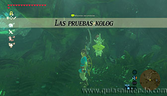

Puedes entrar en este santuario desde que llegas a la región de la torre del bosque, pero tendrás que superar una prueba heroica para poder entrar. La prueba consiste en descubrir el camino oculto y se llama "El poder del control". Para activarla tienes que hablar con Gingo junto al Gran Árbol Deku para activar las pruebas kolog.

Después ve por el camino del suroeste. Ten en cuenta que para avanzar por el Bosque Kolog solo puedes seguir los caminos predeterminados (por donde hay menos niebla o senderos iluminados), si intentas ir por otro camino te envolverá la niebla y regresarás al último punto válido en el que estuviste.
Si sigues el camino válido hacia el noroeste encontrarás sobre una roca a Magnoll. Habla con él para activar la prueba heroica.
A partir de ahora tienes que usar el poder del módulo imán, no necesitas usarlo de momento, pero su modo de visión te permitirá descubrir los árboles que tienen metal en su interior. Esos árboles te irán indicando el camino correcto, así que ve de uno a otro sin desviarte.
Llegará un momento en que no veas más árboles con metales, pero encontrarás un escudo oxidado sobre una roca. muy cerca hay un árbol hueco con dos pebeteros encendidos a su lado y una inscripción. Coge el escudo y ponlo dentro de ese árbol (da igual que sea con el imán o cogiéndolo y depositándolo ahí).
Entonces aparece un cofre que puedes coger y abrir, pero además debes llevártelo a otro árbol que hay tras el lago. Colócalo sobre la balsa y usa una hoja kolog para atravesar la zona de agua (hay una hoja flotando justo delante de la balsa si no tienen ninguna en tu inventario). Al llegar al otro extremo coloca el cofre usando el imán dentro del árbol hueco y así aparecerá la entrada al santuario.
Ahora solo debes nadar para llegar la entrada.
Una vez dentro, avanza para abrir el cofre y conseguir un gran núcleo ancestral. Cuando llegues al altar del santuario examínalo para obtener un símbolo de valía.